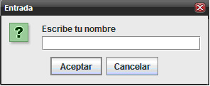
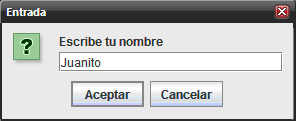
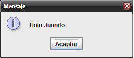

Curso de Java
Desde cero hasta conexiones con bases de datos MySQL
Curso de Java: Contenido
Iniciación: página 21
[ 18, 19, 20, 21, 22, 23, 24 ]
Iniciación al lenguaje Java
Estructuras de control
Introducción
Para terminar la sección de iniciación al lenguaje es necesario explicar cómo se controla el flujo de datos. Para empezar, es útil decir que en todos los lenguajes de programación existen tres tipos de sentencias: las secuenciales, las selectivas y las repetitivas. Hasta ahora, sólo hemos usado el primer tipo, en el que las posibilidades del flujo de datos se reducen a una secuencia de pasos; para hacer que exista más de una alternativa o que cierta tarea se repita varias veces, en Java usa un grupo de palabras reservadas para controlar el flujo y todas ellas usan un bloque de código.
Para ver los ejemplos de cómo funcionan dichas estructuras usaremos la clase JOptionPane que sirve para mostrar cuadros de diálogo y tiene los métodos showInputDialog() y showMessageDialog() que se usan para pedir y dar información al usuario, respectivamente; para ver cómo operan haremos una clase que será otra variante de nuestro tan traído HolaMundo, que primero pedirá el nombre del usuario y luego lo saludará.
Antes de seguir, hagamos un poco de abstracción. Obsérvese que lo que queremos hacer es una demostración de cómo la clase JOptionPane sirve como mecanismo de entrada y salida de datos, por eso la llamaremos DemoIOJOptionPane (IO de Input/Ouput); sus responsabilidades serán pedirle su nombre al usuario, y saludarlo en pantalla; dicho nombre será una propiedad. Cabe aclarar que como el sentido de la clase será dar una demostración, el método main sí entra dentro de sus capacidades.
DemoIOJOptionPane.java
package cursojava.demos; //La encapsulamos en un lugar para todos los demos
import javax.swing.JOptionPane; //Importamos la clase JOptionPane
public class DemoIOJOptionPane {
String nombre; //Este será la información para el I/O
public DemoIOJOptionPane() {
//El constructor llama a sus métodos
pideNombre();
muestraSaludo();
}
/*La palabra reservada null del primer atributo en los dos métodos
*de JOptionPane es porque, por lo común, esta clase es llamada desde una ventana
* que es su propietario como no tenemos tal ventana, lo indicamos así.
* El segundo parámetro es el mensaje que aparecerá en el cuadro de diálogo.
*/
private void pideNombre(){
nombre=JOptionPane.showInputDialog(null,"Escribe tu nombre");//Pide el nombre
}
private void muestraSaludo(){
JOptionPane.showMessageDialog(null,"Hola "+nombre);//Saluda en pantalla
}
public static void main(String[] args) {
new DemoIOJOptionPane();
}
}
Al ejecutar el programa, aparece un cuadro de diálogo con el mensaje que le mandamos como segundo parámetro al método showInputDialog():

Dentro del cuadro de texto se debe escribir un nombre y oprimir el botón <aceptar>:

Luego de lo cual aparecerá otro cuadro de diálogo con la cadena “Hola ” concatenada (usando el operador +) con el nombre escrito por el usuario; el valor obtenido de esta concatenación es lo que mandamos como segundo parámetro del método showMessageDialog():

Con esto podemos empezar a trabajar con el flujo de datos. Si se ejecuta el programa y en el primer cuadro de diálogo se oprime <cancelar> en lugar de <aceptar>, la cadena que mostrará después será Hola null, que no es el resultado esperado, si se quisiera controlar esto, se tendría que controlar el flujo. Existen varias posibilidades para esto y las veremos en seguida.